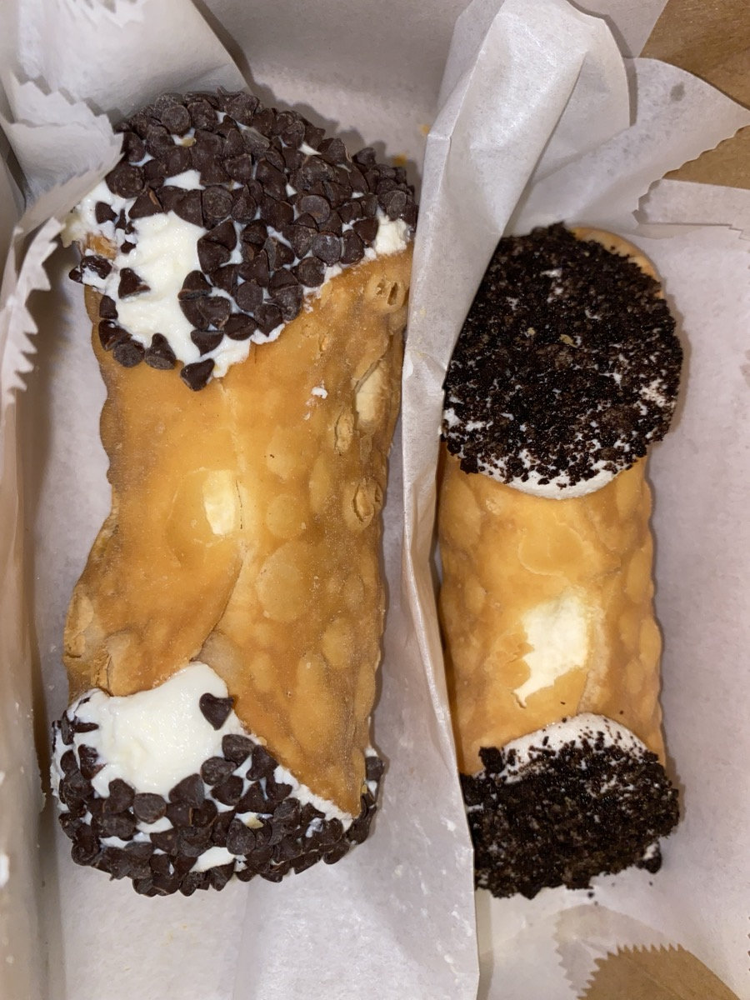
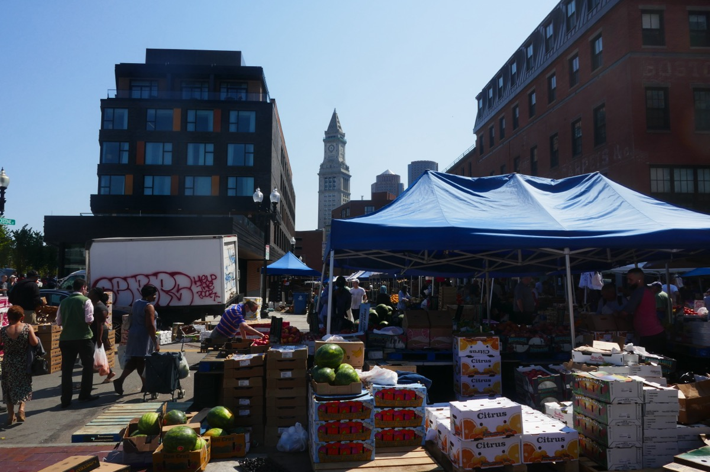

This page is our standing answer to "what should I do in Boston this weekend?" The Friday-to-Sunday plan below, the recurring events, the picks by interest and the rainy-day fallback all stay useful whichever weekend you read it. Everything has an address and the nearest T stop, and nothing here requires a car.
If you're visiting for longer, our Boston weekend itinerary is the hour-by-hour version.
01
The weekend plan: Friday, Saturday, Sunday
The plan we'd give a friend arriving Friday afternoon. Swap blocks freely; each one is a self-contained half day.
| When | Friday | Saturday | Sunday |
|---|---|---|---|
| Morning | — | Haymarket, then the Freedom Trail from Faneuil Hall to the North End (Haymarket, Orange/Green) | Brunch in the South End, then SoWa Open Market (Tufts Medical Center, Orange, or Back Bay) |
| Afternoon | Arrive; walk the Harborwalk from the Seaport to Christopher Columbus Park (Courthouse, Silver) | Ferry to Spectacle Island from Long Wharf, or the MFA if it's cloudy (Aquarium, Blue / Museum of Fine Arts, Green E) | Red Line to Harvard Square: bookstores, the Yard, Harvard Art Museums (Harvard, Red) |
| Evening | Dinner in the North End; cannoli on Hanover Street; a drink in the Seaport or Beacon Hill (Haymarket) | Red Sox at Fenway if there's a home game; otherwise the South End or Cambridge for dinner and a show (Kenmore, Green) | Sunset from the Esplanade dock, then an early dinner in Back Bay or Beacon Hill (Charles/MGH, Red) |
02
What happens in Boston every weekend
Markets, games and open days that repeat weekend after weekend.
| What | When | Where | Nearest T stop |
|---|---|---|---|
| Haymarket produce market | Fri and Sat, roughly 7am–7pm | Blackstone St, Downtown | Haymarket (Orange/Green) |
| SoWa Open Market | Sundays 11am–4pm, May–October | 460 Harrison Ave, South End | Tufts Medical Center (Orange), 12-min walk |
| Copley Square Farmers Market | Tuesdays and Fridays, May–November | Copley Square, Back Bay | Copley (Green) |
| Red Sox at Fenway Park | Roughly half the weekends, April–September | 4 Jersey St, Fenway | Kenmore (Green) |
| Harvard Art Museums | Free every day, Tue–Sun 10–5 | 32 Quincy St, Cambridge | Harvard (Red) |
| ICA Boston free night | Thursdays 5–9pm (start your weekend early) | 25 Harbor Shore Dr, Seaport | Courthouse (Silver) |
| MIT Museum free day | Last Sunday of the month | 314 Main St, Cambridge | Kendall/MIT (Red) |
| Harbor Islands ferry | Daily through early October, weekends only after | Long Wharf North | Aquarium (Blue) |
| Boston Public Market | Daily, 8am–6pm (Sun from 10am) | 100 Hanover St | Haymarket (Orange/Green) |
| Harvard Square street life | Every day, best Sat and Sun afternoons | Around Harvard station | Harvard (Red) |
03 · Friday night
Friday night in Boston
Dinner and a cannoli in the North End
Hanover St and Salem StT Haymarket (Orange, Green)$30–60pp

The standard first-night Boston experience. Reservations are hard, so book ahead or eat early; smaller Salem and Prince Street places take walk-ins more readily.
A drink with a view in the Seaport
Lookout Rooftop, 70 Sleeper StT Courthouse (Silver)Seasonal, weekend lines
Loud and young. The Lookout has the skyline across Fort Point Channel; Fan Pier Park is free and has the same view from ground level.
Comedy or live music
Laugh Boston, 425 Summer StT World Trade Center (Silver)Shows 7:30 & 9:45pm
Friday is the best night for stand-up at Laugh Boston, and Wally's Cafe has had live jazz nightly since 1947 with no cover.
04 · Saturday
Saturday in Boston
Haymarket at 8am
Blackstone St, DowntownT Haymarket (Orange, Green)Cash

An open-air produce market on the same block since 1830. Vendors shout prices, boxes of peaches go for a few dollars. Over by dinner.
The Freedom Trail from Faneuil Hall to Copp's Hill
Faneuil Hall, 4 S Market StT Government Center (Blue, Green)~1.5 mi, 90 min

The north half of the trail: Paul Revere House, Old North Church, Copp's Hill Burying Ground with its harbor view. Ends back on Hanover Street.
Ferry to Spectacle Island
Long Wharf North, 66 Long WharfT Aquarium (Blue)~$25pp, May–Oct

A 20-minute ferry ride to a swimming beach, five miles of trails and the highest point in the harbor. Bring food; the island café is limited.
A morning at the Museum of Fine Arts
465 Huntington AveT Museum of Fine Arts (Green E)$27

Arrive at opening and choose a wing: the Americas, the Japanese temple room, or Egyptian. The Gardner is a five-minute walk away.
A Red Sox game at Fenway Park
4 Jersey St, FenwayT Kenmore (Green)From ~$20

If the Sox are home, this is the plan. Get there 90 minutes early to walk Jersey Street, closed to traffic on game days.
05 · Sunday
Sunday in Boston
SoWa Open Market
460 Harrison Ave, South EndT Tufts Medical Center (Orange)Sun 11–4, May–Oct
About 200 makers, a farmers market, food trucks, a vintage market in a former power station. Fills up by 1pm.
Harvard Square and the Harvard Art Museums
32 Quincy St, CambridgeT Harvard (Red)Museums free, Sun 10–5

Bookstores, street musicians, the Yard, and the museums, free since 2023. The Weeks Footbridge is five minutes south.
Sunset on the Esplanade
Dock by the Hatch ShellT Charles/MGH (Red)Free

Facing west over the Charles toward Cambridge. Sailboats coming in, the Citgo sign lighting up behind you.
Brunch, then the Public Garden
Between Arlington, Beacon, Charles & Boylston StT Arlington (Green)Always open
A late brunch, then the Ducklings, the Swan Boats in season, and a walk down Commonwealth Avenue Mall.
06
Weekend picks by interest
| If you want… | Do this | Guide |
|---|---|---|
| History | Freedom Trail, USS Constitution in Charlestown (free to board, bring ID), the Old State House | Freedom Trail guide |
| Food | North End Friday, Haymarket Saturday, South End brunch Sunday, a lobster roll on the waterfront | Food & drink in Boston |
| Water | Harbor Islands ferry, Charlestown ferry from Long Wharf, kayak rental on the Charles at Kendall | Free things to do |
| Art | MFA, Gardner, ICA, Harvard Art Museums, SoWa galleries on Sunday | Rainy-day guide |
| Nightlife | Seaport rooftops, Central Square, Wally's, comedy in the Seaport or North End | Boston at night |
| A date | Public Garden, dinner and a view, the Esplanade at sunset | Date ideas in Boston |
| Spending nothing | Freedom Trail, Harborwalk, Harvard Art Museums, Haymarket, SoWa, Esplanade | Free things to do |
07
If it rains this weekend
Saturday, wet version: the Museum of Fine Arts at opening, then the Isabella Stewart Gardner Museum next door, with its glass-roofed courtyard. Lunch at Time Out Market, five minutes away. In the afternoon, Bates Hall at the Boston Public Library, then the covered walk through the Prudential Center.
Sunday, wet version: the Boston Public Market and Quincy Market for a late breakfast, the New England Aquarium if you have patience for lines, and an afternoon film at the Coolidge Corner Theatre or the Brattle.
The full rain plan is in things to do in Boston when it rains.
08
What's on and what's changing
The last of the North End feasts
Hanover St and North StT Haymarket (Orange)Weekend evenings, late Jul–mid Sep
Italian religious feasts run every weekend from late July. A procession, a street closed to traffic, sausage and pepper stands, a brass band. Check the schedule; dates shift year to year.
Fall foliage
Arnold Arboretum, Esplanade, Comm Ave MallPeak mid–late October
First color shows in the second half of September in the Arboretum and along the Esplanade. Peters Hill has the best skyline view.
Head of the Charles
BU Bridge to Eliot BridgeT Harvard / Central (Red)Third weekend of October, free
The world's largest two-day rowing regatta: about 11,000 rowers, free to watch from the Weeks Footbridge or the Esplanade.
End-of-season dates to know
VariousCheck before you go
Swan Boats stop mid-September; Harbor Islands ferry goes weekend-only after Columbus Day; Red Sox season ends late September; SoWa's last Sunday is late October.
09
Weekend logistics
Getting around. The T runs from about 6am until roughly 12:30am on weekends, and a ride is $2.40; a 7-day pass is $22.50. Weekend track work is common, so check the MBTA alerts on Friday. Everything in the plan above is in the central neighborhoods: Downtown to the North End is 10 minutes, to the Seaport 15, to Copley 20.
Reservations. Book Friday and Saturday dinner in the North End, South End and Seaport a week ahead in peak season. Museums don't require timed tickets most weekends, but the ICA and Gardner get crowded after 1pm.
Driving. Don't, if you can avoid it. Weekend parking downtown is expensive and the North End and Fenway are effectively closed to visitor cars on Friday nights and game days.
FAQ
Boston this weekend: common questions
What is there to do in Boston this weekend for free?
Every weekend: the Freedom Trail, the Harborwalk, the Public Garden, Haymarket on Friday and Saturday, and Harvard Square. From May through October, SoWa Open Market on Sunday. The Harvard Art Museums are free every day, and the ICA is free on Thursday evenings if you can start the weekend early.
Is the SoWa market open this weekend?
SoWa Open Market runs every Sunday from early May through the end of October, 11am to 4pm, at 460 Harrison Avenue in the South End. It closes for the season after the last Sunday in October and reopens the following May.
What is the best way to get around Boston on a weekend?
Walk and take the T. Weekend subway service runs from about 6am until roughly 12:30am, and a single ride is $2.40. Downtown, the North End, Beacon Hill, Back Bay and the Seaport are all within a 30-minute walk of each other. Avoid driving into the North End or Fenway on a game day.
Is Boston busy on weekends in the fall?
Yes. September and October are among Boston's busiest months, with students back, conventions in the Seaport and foliage visitors arriving. Book restaurants for Friday and Saturday nights, go to museums early, and expect lines at popular North End bakeries in the afternoon.
What can I do in Boston this weekend if it rains?
The Museum of Fine Arts, the ICA, the Isabella Stewart Gardner Museum, the Boston Public Library, the Boston Public Market and Quincy Market, the connected Prudential Center and Copley Place malls, and the Coolidge Corner and Brattle cinemas are all fully indoor and open on weekends.
Are the Red Sox playing at Fenway this weekend?
The Red Sox regular season runs from late March or early April through the last weekend of September, with roughly half of the weekends at home. Check the schedule on the MLB site before you plan; if there is a home game, Kenmore Square and Lansdowne Street will be crowded three hours before first pitch.